x <- 3; y<- 4
plot(x,y, asp = 1,
xlim = c(0,x), ylim = c(0,y),
type = "n")
points(0,0, pch = 19)
arrows(0,0,x,y, lwd = 2)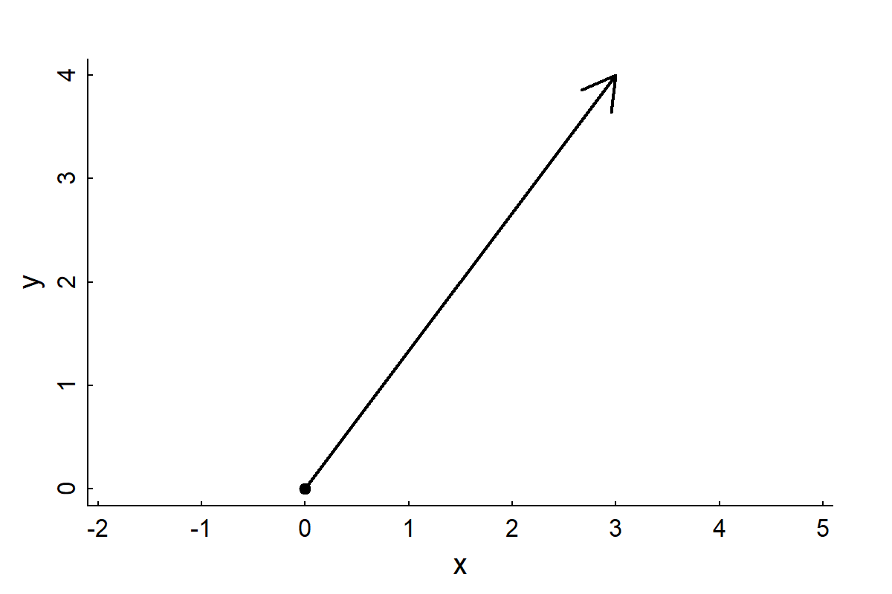
Complex numbers are the single most efficient way to deal with 2D vectors, both in math notation and in R code!
Complex numbers are, essentially, a handy bookkeeping tool to package together two dimensions in a single quantity. They also simultaneously express both Cartesian coordinates (position) and polar coordinates (distance and direction). This dual nature makes them exceptionally well-suited for movement analysis, where we care about both where an animal is and how it’s moving.
They expand the one-dimensional (“Real”) number line into a second dimension (“Imaginary”).
We write a complex number \(Z = X + iY\)
The same number can be written in terms of distances and angles, which are the two basic movement metrics of greatest practical interest:
\[ Z = R \, \exp(i \theta) = R(\cos \theta + i \sin \theta) \]
where: - \(R\) is the length of the vector from the origin, aka modulus or magnitude - \(\theta\) is the orientation of the vector, aka the argument
This angle, \(\theta\) is defined in radians that turn counter-clockwise from the x-axis, \(\pi/2\) is on the y-axis, \(\pi\) is on the negative x-axis, etc. You can see that by simply putting in some numbers:
\[Z = 1 = \exp{0}\] \[Z = 0 + 1i = \exp{(i \pi/2)}\]
All of these have modulus 1.
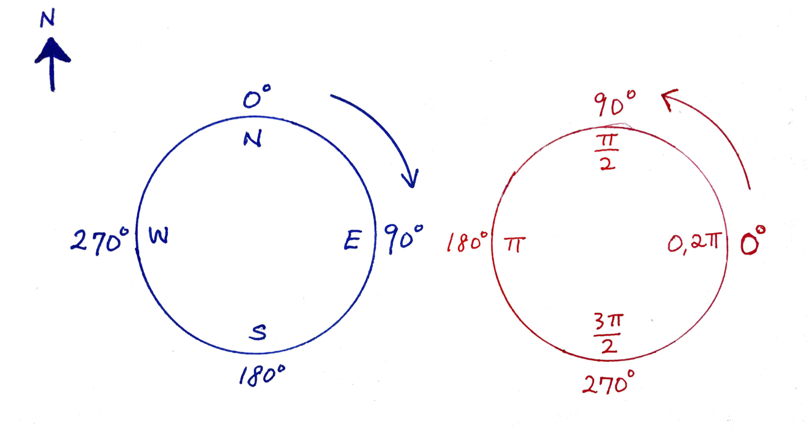
Alternatively:
Z <- complex(re = X, im=Y)plot(Z, pch=19, col=1:3, asp=1)
arrows(rep(0,length(Z)), rep(0,length(Z)), Re(Z), Im(Z), lwd=2, col=1:3)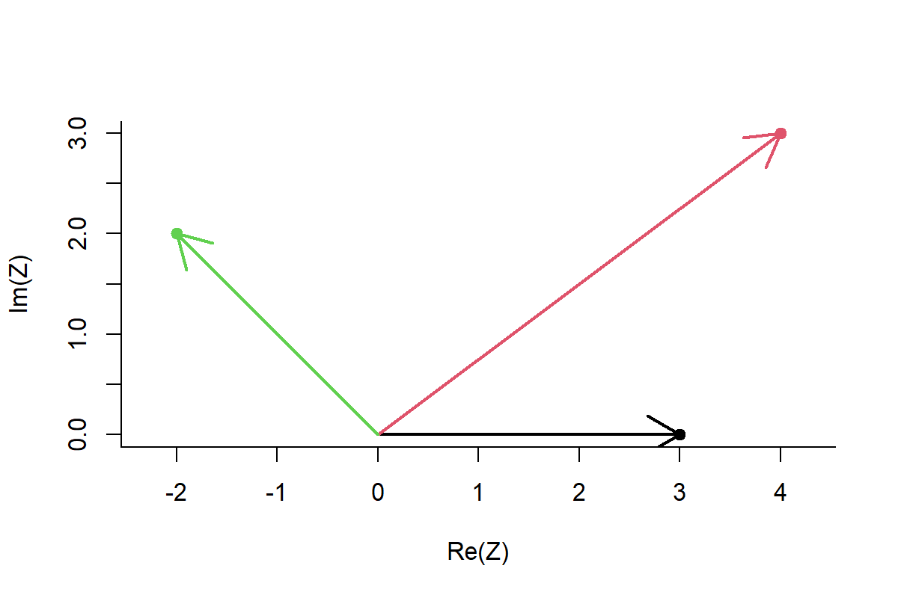
Note: ALWAYS use asp=1 - “aspect ratio = 1:1” - when plotting (properly projected) movement data!
Obtaining summary statistics is nearly instant. Obtain lengths of vectors:
Mod(Z)[1] 3.000000 5.000000 2.828427Obtain orientation of vectors:
Arg(Z)[1] 0.0000000 0.6435011 2.3561945Note, the orientations are in radians, i.e. range from \(0\) to \(2\pi\) going counter-clockwise from the \(x\)-axis. Compass directions go from 0 to 360 clockwise, so, to convert:
90-(Arg(Z)*180)/pi[1] 90.0000 53.1301 -45.0000Quick code for a correlated random walk:
X <- cumsum(arima.sim(n=100, model=list(ar=.7)))
Y <- cumsum(arima.sim(n=100, model=list(ar=.7)))
Z <- X + 1i*Y
plot(Z, type="o", asp=1)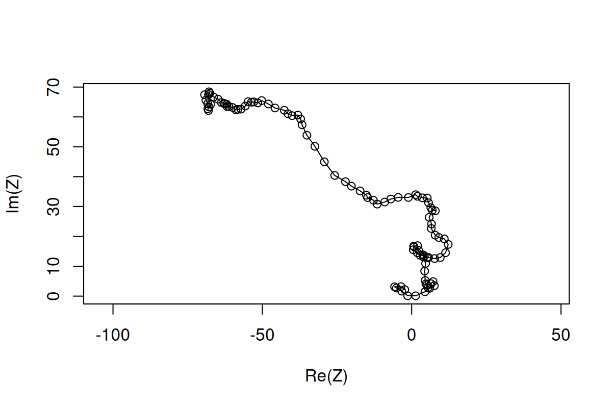
Instant summary statistics of a trajectory:
The average location
mean(Z)[1] -23.95766+24.39845iThe step vectors:
dZ <- diff(Z)
plot(dZ, asp=1, type="n")
arrows(rep(0, length(dZ)), rep(0, length(dZ)), Re(dZ), Im(dZ), col=rgb(0,0,0,.5), lwd=2, length=0.1)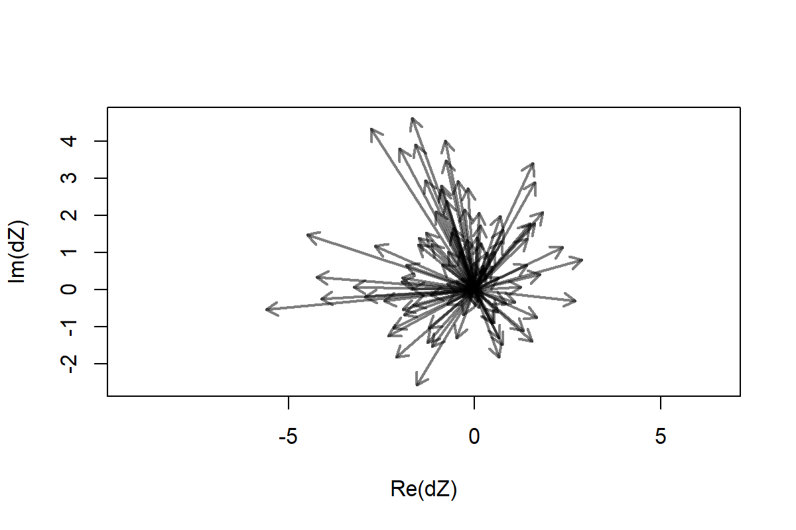
Distribution of step lengths:
Min. 1st Qu. Median Mean 3rd Qu. Max.
0.1718 1.1010 1.8296 1.9793 2.6824 5.6392 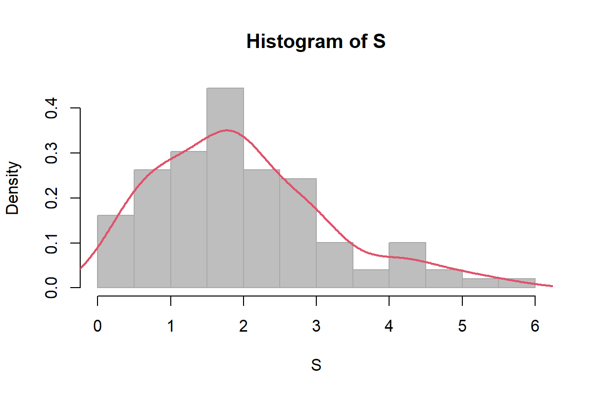
What about angles?
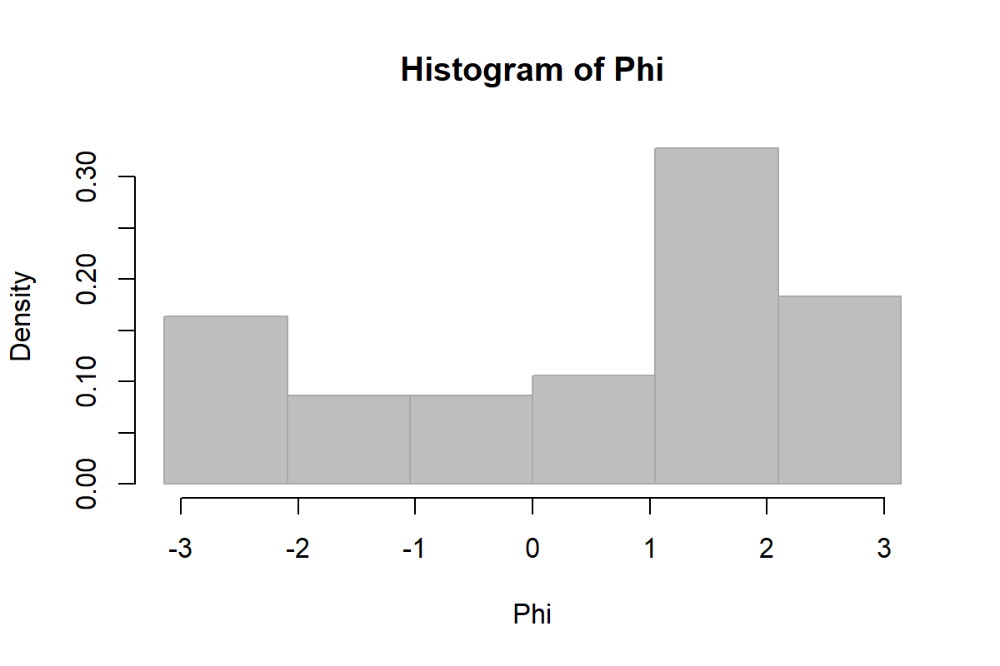
QUESTION: What is a problem with this histogram?
Circular statistics:
Angles are a wrapped continuous variable, i.e. \(180^o > 0^o = 360^o < 180^o\). The best way to visualize the distribution of wrapped variables is with Rose-Diagrams. An R package that deals with circular data is circular.
require(circular)
Theta <- as.circular(Theta)
Phi <- as.circular(Phi)
rose.diag(Phi, bins=16, col="grey", prop=2, main=expression(Phi))
rose.diag(Theta, bins=16, col="grey", prop=2, main=expression(Theta))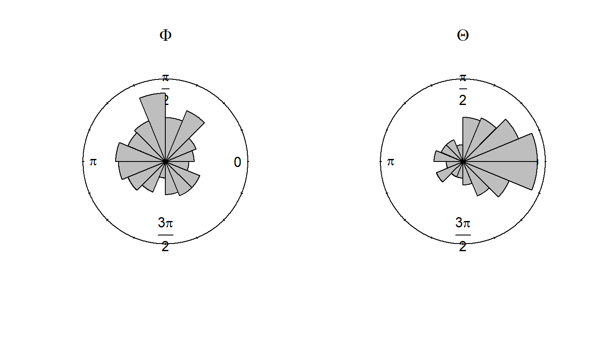
LAB EXERCISE
- Load movement data of choice!
- Convert the locations to a complex variable Z.
- Obtain a vector of time stamps T, draw a histogram of the time intervals. Then, ignore those differences.
- Obtain, summarize and illustrate:
- the step lengths
- the absolute orientation
- the turning angles
Addition and subtraction of vectors:
\[ Z_1 = X_1 + i Y_1; Z_2 = X_2 + i Y_2\] \[ Z_1 + Z_2 = (X_1 + X_2) + i(Y_1 + Y_2)\]
Useful, e.g., for shifting locations:
Multiplication of complex vectors \[Z_1 = R_1 \exp(i \theta_1); Z_2 = R_2 \exp(i \theta_2)\] \[ Z_1 Z_2 = R_1 R_2 \exp(i (\theta_1 + \theta_2))\] Note the magic of the rotation summing! If \(\text{Mod}(Z_2) = 1\), multiplications rotates by \(\text{Arg}(Z_2)\)
theta1 <- complex(mod=1, arg=pi/4)
theta2 <- complex(mod=1, arg=-pi/4)
plot(Z, asp=1, type="l", col="darkgrey", lwd=3)
lines(Z*theta1, col=2, lwd=2)
lines(Z*theta2, col=3, lwd=2)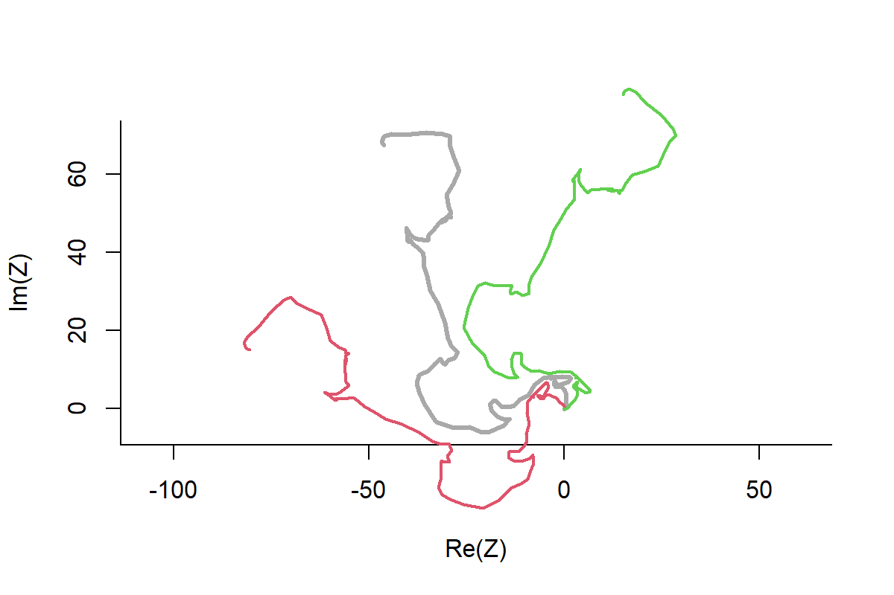
A colorful loop:
I know you’re probably thinking …
“Thanks for teaching me how to make a weird swirling rainbow thing … but why in the world would I want to shift and rotate my precious, precious data, which was just perfect the way it was?
My response: Null Sets for Pseudo Absences!
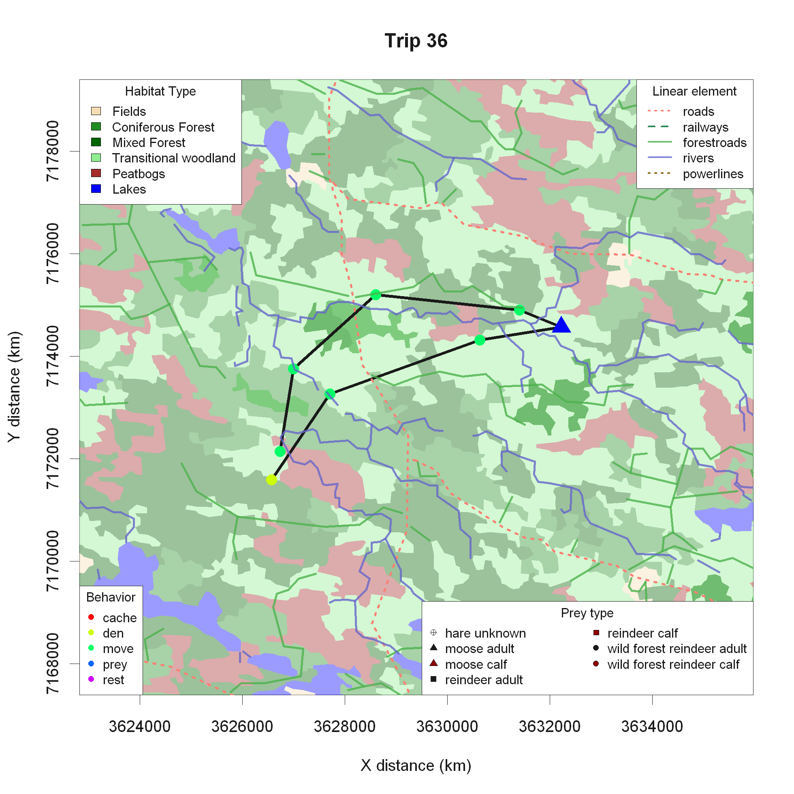
In-depth summer predation study, questions related to habitat use, landscape type - forest/bog/field - linear elements - roads/rivers/power lines, etc.
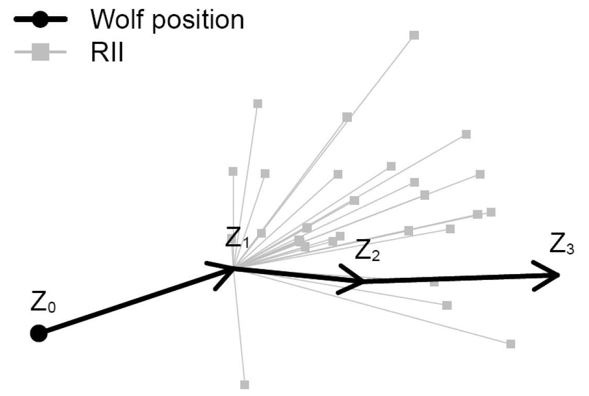
plot(c(0, RelSteps), asp=1, xlab="x", ylab="y", pch=19)
arrows(rep(0,n-2), rep(0, n-2), Re(RelSteps), Im(RelSteps), col="darkgrey")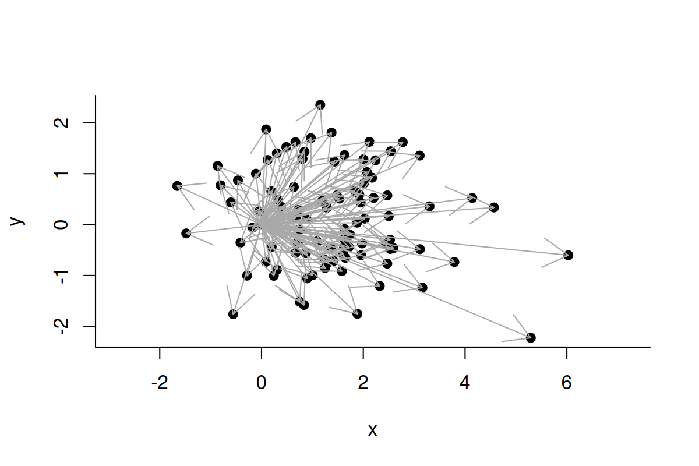
Note: in practice (i.e. with tons of data), it is sufficient to randomly sample some smaller number (e.g. 30) null steps at each location.
The use of the null set is a way to test a narrower null hypothesis that accounts for auto correlation in the data.
The places the animal COULD HAVE but DID NOT go to are pseudo-absences, against which you can fit, e.g., logistic regression models (aka Step-selection functions).
Or just be simple/lazy (like us) and compare observed locations with Chi-squared tests:
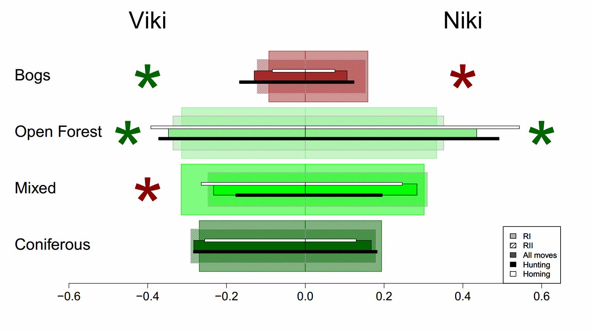
EXERCISE: Create a fuzzy-catterpillar plot!
Use (a portion) of the data you analyzed before.
# get pieces
n <- length(Z)
Steps <- diff(Z)
S <- Mod(Steps)
Phi <- Arg(Steps)
Theta <- diff(Phi)
RelSteps <- complex(mod = S[-1], arg = Theta)
# calculate null set
Z0 <- Z[1:(n-2)]
Z1 <- Z[2:(n-1)]
Z2 <- Z[3:n]
Rotate <- complex(mod = 1, arg = Arg(Z1-Z0))
Z.null <- matrix(NA, ncol=n-2, nrow=n-2)
for(i in 1:length(Z1))
Z.null[i,] <- Z1[i] + sample(RelSteps) * Rotate[i]
# plot
plot(Z, type="o", col=1:10, pch=19, asp=1)
for(i in 1:nrow(Z.null))
segments(rep(Re(Z1[i]), n-2), rep(Im(Z1[i]), n-2),
Re(Z.null[i,]), Im(Z.null[i,]), col=i+1)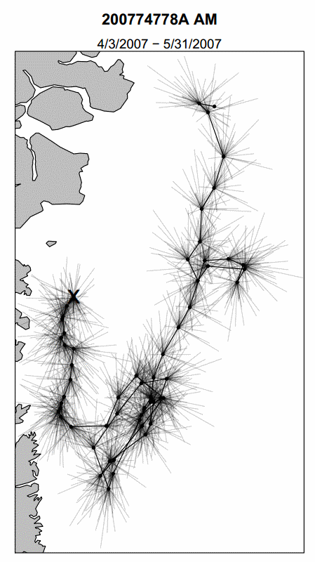
Complex numbers provide a powerful, elegant framework for movement analysis that:
Complex numbers teach us to think in terms of vectors, and allow us to transform cumbersome spatial calculations into intuitive vector operations, making movement analysis accessible and efficient.